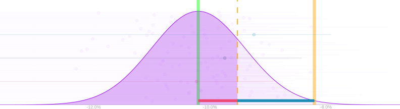
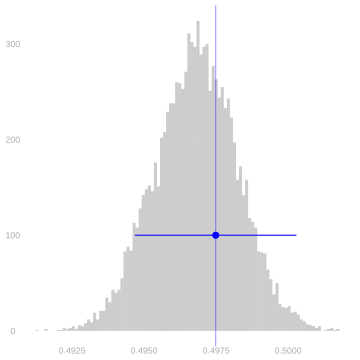
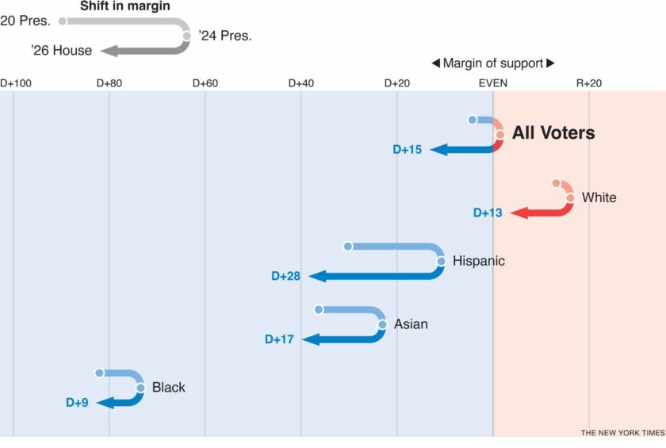
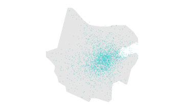
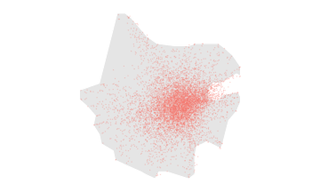

HW6: Variance of Comparisons
These exercises are new this year. If any part reads unclearly, ask and I’ll clarify.
Summary
The question is whether a turnout survey can help us predict who wins. Taking each group’s candidate preference as given lets us isolate the uncertainty about who shows up. That makes the ratio an election forecast, the confidence interval a statement about whether we can call a majority, and the power calculation a way to plan a survey capable of doing that.
In class, we discussed the Georgia Republican Party’s effort to suppress Black turnout. Could that effort cost the Democrats their majority? For this exercise, we’ll take Democratic support to be 90% among Black voters and 35% among non-Black voters. These are hypothetical inputs. Suppose that effort reduces Black turnout from 60% to 58%, with the same registration counts and non-Black turnout. This lowers the implied Democratic vote share from about 50.05% to 49.68%. The candidate moves from just above one-half to just below it. We want to know whether a turnout survey can give convincing evidence of that loss of a majority.


In our lecture Comparing Two Groups: Precision, Power and Allocation, we used the variance of a difference in subsample means to work out how many calls our survey needs. A candidate’s vote share depends on turnout in each group, because a group that turns out more makes up more of the people who vote. Here you’ll use a linear approximation to work out the variance of that forecast and put a confidence interval around it. We’ll review the lecture’s power calculation, then you’ll adapt it to the vote share and work out how many calls we need, and how to divide them between the groups, to have a good chance of showing that the Democratic vote share is below one-half under the reduced-turnout alternative.
Calculus Review: Linear Approximation
We’re going to be using linear approximation to simplify some of our calculations. Given a function h(x), we can approximate it near any point x_0 like this. We call x_0 the base point: it is where we evaluate the function and its derivative. h(x) \approx h(x_0) + h'(x_0)(x-x_0)
Hopefully you remember that from calculus. If you like, you can call this first-order Taylor approximation. And there are a few formulas for the error of this approximation, which is called the remainder in Taylor’s Theorem, in most calculus textbooks.
When we’re thinking about functions of multiple variables, we use the multivariate version, which involves partial derivatives. Here the base point is (x_0,y_0), where we evaluate the function and its partial derivatives. \begin{aligned} h(x,y) &\approx h(x_0,y_0) \\ &\quad + \left\{\frac{\partial h}{\partial x}(x_0,y_0)\right\} (x-x_0) \\ &\quad + \left\{\frac{\partial h}{\partial y}(x_0,y_0)\right\} (y-y_0). \end{aligned}
Variance Calculation for Comparisons
Differences in Means
In our lecture Comparing Two Groups: Precision, Power and Allocation, we talked about how to use subsample means to compare two groups. In particular, we talked about the case that we’ve drawn a stratified sample of Georgia’s registered voters: we chose two sample sizes in advance, n_1 Black registered voters (w=1) and n_0 non-Black registered voters (w=0), and drew a sample independently from each group, without replacement. And we talked about using the difference \ingroupb{\hat\mu(1)}-\ingroupa{\hat\mu(0)} in the turnout rates among the n_1 and n_0 sampled voters to estimate the corresponding difference \ingroupb{\mu(1)}-\ingroupa{\mu(0)} in turnout among the m_1 and m_0 registered voters. The rest of this homework uses two facts about this estimator from that lecture. First, it’s unbiased: expectation is linear, and each subsample mean is an unbiased estimator of its group’s turnout rate when we sample from that group with or without replacement (Homework 4).
\E\left\{\ingroupb{\hat\mu(1)}-\ingroupa{\hat\mu(0)}\right\} =\E\left\{\ingroupb{\hat\mu(1)}\right\}-\E\left\{\ingroupa{\hat\mu(0)}\right\} =\ingroupb{\mu(1)}-\ingroupa{\mu(0)}.
Second, because we draw the two samples independently, their variances add (Homework 4, Variances), and each one has the correction factor for sampling without replacement that you derived in Homework 4.
\begin{aligned} \Var\left\{\ingroupb{\hat\mu(1)}-\ingroupa{\hat\mu(0)}\right\} &=\Var\left\{\ingroupb{\hat\mu(1)}\right\}+\Var\left\{\ingroupa{\hat\mu(0)}\right\}\\ &=\ingroupb{\frac{\sigma^2(1)}{n_1}}\textcolor{#ef476f}{\frac{m_1-n_1}{m_1-1}} +\ingroupa{\frac{\sigma^2(0)}{n_0}}\textcolor{#ef476f}{\frac{m_0-n_0}{m_0-1}}. \end{aligned}
Because turnout is binary, \sigma^2(w)=\mu(w)\{1-\mu(w)\}. Statewide the correction factors are close to one and we can get away with dropping them. That’s what we did in class. And you can confirm that dropping them was OK by plugging in m_1, m_0, n_1 and n_0. In McIntosh County, later in this homework, they aren’t.
Ratios of Means
Write \theta_1 and \theta_0 for the Democratic candidate’s share of the votes cast by Black and by non-Black registered voters. We’ll take \theta_1 = 0.90 and \theta_0 = 0.35 as given, so the only thing we’re estimating is turnout. These are round figures chosen for this exercise. Of the m_1 = 2{,}290{,}365 Black registered voters on Georgia’s 2020 roll, m_1\mu(1) vote, and m_1\mu(1)\theta_1 of them vote for the candidate; likewise for the m_0 = 5{,}350{,}986 non-Black registered voters on that roll. So the candidate’s share of the votes cast is \theta=\frac{m_1\mu(1)\theta_1+m_0\mu(0)\theta_0}{m_1\mu(1)+m_0\mu(0)}.
NoteWhy Black and non-Black?
“Non-Black” is everyone else on the roll: a complement, defined by what its members are not. So it is worth asking why splitting the state two ways is a reasonable thing to do at all.

The figure follows a few of the larger groups the Times reports on, at three elections. What matters here is how far apart they are. Black voters sit around D+80, far from everyone else shown; the other groups all sit much nearer even.
That distance is what makes the two-way split worth anything. D+80 is roughly a 90–10 split, which is where our \theta_1 = 0.90 comes from. We choose \theta_0 = 0.35 as a hypothetical support level for the exercise. With our turnout assumptions, it lets the two-point drop in Black turnout move the statewide Democratic vote share from just above one-half to just below it. The 35% is not estimated from the Times figure, which is national rather than Georgian. We take both group support rates as given so that we can study the uncertainty about turnout.
If \hat\mu(1) and \hat\mu(0) are good estimators of \mu(1) and \mu(0), then shouldn’t this be a good estimator of \theta? \hat\theta = \frac{m_1\hat\mu(1)\theta_1+m_0\hat\mu(0)\theta_0}{m_1\hat\mu(1)+m_0\hat\mu(0)} Let’s look into it. To do this, we’ll think of the vote share as a function of the two turnout rates. \hat\theta-\theta = h(\hat\mu(1),\hat\mu(0))-h(\mu(1),\mu(0)) \qqtext{for} h(x,y)=\frac{m_1\theta_1x+m_0\theta_0y}{m_1x+m_0y}.
And we’ll use a linear approximation to this function to think about this difference.
We choose the base point for convenience. For theoretical calculations of bias and variance, we’ll use the population turnout rates (\mu(1),\mu(0)), so the coefficients stay constant as the sample changes. When we estimate the variance from a sample, we’ll plug in the sample turnout rates, because those are the ones we have. Either way, there is an approximation error to bound.
Using the population turnout rates as our base point, we get this.
\begin{aligned} h(\hat\mu(1), \hat\mu(0)) &\approx h(\mu(1), \mu(0)) \\ &\quad + \left[\dfrac{\partial h}{\partial x}(\mu(1), \mu(0))\right]\left\{\hat\mu(1) - \mu(1)\right\} \\ &\quad + \left[\dfrac{\partial h}{\partial y}(\mu(1), \mu(0))\right]\left\{\hat\mu(0) - \mu(0)\right\} \end{aligned}
This approximation should be good if \hat\mu(1) and \hat\mu(0) are close to \mu(1) and \mu(0).
Exercise 1 When our sample includes a reasonably large number of observations in both groups, it’s reasonable to expect that they should be close. With a sentence or two, or a rough sketch if you prefer, explain why.
AnswerTemplate
(your answer here)
Now that we’ve justified the approximation, let’s use it to analyze our vote share estimator.
Exercise 2 Using the population turnout rates (\mu(1),\mu(0)) as the base point, write out a formula for the linear approximation to our estimator \hat\theta=h(\hat\mu(1),\hat\mu(0)) in terms of m_1, m_0, \theta_1, \theta_0, \mu(1), \mu(0), \hat\mu(1)-\mu(1), and \hat\mu(0)-\mu(0). Then approximate its bias by comparing the expected value of this linear approximation to the estimation target \theta.
AnswerTemplate
(your answer here)
Exercise 3 Using the population turnout rates as the base point, calculate the variance of the linear approximation to \hat\theta from Exercise 2 to find a formula approximating the variance of this estimator. For the interval calculation, use the sample turnout rates as the base point of the linear approximation. Estimate each group’s turnout variance from the sample, too. Use the resulting variance estimate to calculate a 95% confidence interval based on normal approximation for the vote share \theta, using the sample described below. Draw it on top of the plot of that estimator’s sampling distribution in Figure 1.1 With all these approximations, are you still getting an interval similar to the one I already drew there, which is calibrated using the estimator’s actual sampling distribution?
The sample sizes are fixed by the survey design:
\begin{alignedat}{2} n_1 &= 5{,}259 &\quad& \text{Black voters called} \\ n_0 &= 12{,}270 &\quad& \text{non-Black voters called.} \end{alignedat}
You can use the turnout rates observed in the first sample simulated for Figure 1:
\begin{alignedat}{2} \hat\mu(1) &= 0.5840 &\quad& \text{turnout rate among Black voters called} \\ \hat\mu(0) &= 0.6822 &\quad& \text{turnout rate among non-Black voters called.} \end{alignedat}
AnswerTemplate
(your answer here)
All of that ignores the error of our linear approximation as a potential problem. We should, if we like, be able to reason about this error using tools from calculus.
Exercise 4 Extra Credit. Using some version of Taylor’s Theorem to characterize the error of the linear approximation you’ve been working with, refine your answer to Exercise 2: find an upper bound on the absolute value of the estimator’s bias. This should be a formula involving m_1, m_0, \theta_1, \theta_0, \mu(1), \mu(0), and the subsample sizes n_1 and n_0. Compare it to your approximation of the estimator’s standard deviation from Exercise 3. Are you worried that confidence intervals like the one you calculated in Exercise 3 might have coverage well below the nominal level of 95%?
Sample Size and Allocation
Review: power for the turnout gap
The picture reviews the lecture’s Power Calculation. We estimated the turnout gap \delta=\mu(1)-\mu(0) using \hat\delta=\hat\mu(1)-\hat\mu(0). Using the lecture’s rounded rates, the old gap was \delta_0=0.600-0.682=-0.082. Our alternative was a two-point decrease, to \delta=0.580-0.682=-0.102. In lecture, we called a guess like that about the value of the estimand our alternative value, and designed our survey to meet our standard if that guess is right.
To be evidence of a decrease, an estimate’s right arm has to end to the left of the old gap. That arm is 1.65 standard errors long. The estimate therefore has to lie below the dashed cutoff.
\hat\delta+1.65\,\mathrm{se}<\delta_0 \qqtext{if and only if} \hat\delta<\delta_0-1.65\,\mathrm{se}.
For 80% of estimates to meet this standard, the 80th percentile of the sampling distribution must be at or below the cutoff. That percentile is 0.84 standard errors above the alternative. The purple area is the proportion of estimates that meet the standard, and the two colored distances add to the separation between the alternative and the old gap.
\begin{aligned} \delta+0.84\,\mathrm{se}&\le\delta_0-1.65\,\mathrm{se} \\ \delta_0-\delta=0.02&\ge(1.65+0.84)\,\mathrm{se} \\ \mathrm{se}&\le\frac{0.02}{2.49}\approx0.008. \end{aligned}
In the lecture’s “How many calls?” exercise, proportional allocation needed 5,259 calls to Black voters and 12,270 to non-Black voters for this standard-error target. We’ll use that design as a benchmark for the cost of answering our new question.
This is the worked review. In Exercise 5, you’ll relabel this argument for the estimated Democratic vote share, find its new standard-error target, and use your variance formula to choose the call counts.
The alternative world
We’ll keep the lecture’s hypothetical success of the Georgia Republican Party’s effort to suppress Black turnout and ask whether it costs the Democrats their majority. Using the lecture’s rounded rates, the original world has 60% Black turnout and 68.2% non-Black turnout; the alternative lowers Black turnout to 58%. With the hypothetical candidate preferences below, the implied statewide share moves from about 50.05% to 49.68%. These are the alternative population values we’ll use to design the survey.
\begin{alignedat}{2} \ingroupb{\mu(1)} &= 0.580 &\quad& \text{turnout among Black voters, two points below 2020} \\ \ingroupa{\mu(0)} &= 0.682 &\quad& \text{turnout among non-Black voters, as in 2020} \\ \ingroupb{m_1} &= 2{,}290{,}365 &\quad& \text{Black registered voters on Georgia's 2020 roll} \\ \ingroupa{m_0} &= 5{,}350{,}986 &\quad& \text{non-Black registered voters on that roll} \\ \theta_1 &= 0.90 &\quad& \text{Democratic vote share among Black voters} \\ \theta_0 &= 0.35 &\quad& \text{Democratic vote share among non-Black voters.} \end{alignedat}
For the election forecast, evidence of a lost majority means that a one-sided 95% confidence interval for the Democratic vote share lies entirely below one-half. We want that to happen in 80% of our samples if the reduced-turnout alternative is right. The Power Calculation in our lecture shows how to turn that requirement into a standard-error target. The direction is the same as in class: an upper confidence bound must fall below a reference value. Here the reference is one-half rather than the old turnout gap.
We will compare two ways to divide the calls. We call an allocation proportional if the groups receive the same shares of calls as their shares of registered voters. We call it equal if we call the same number of people in each group. Proportional allocation resembles the population; equal allocation gives the two turnout estimates the same number of observations. Our vote-share formula already uses the registration counts to account for the groups’ sizes, so the sample does not have to reproduce their proportions. The useful comparison is how much uncertainty each allocation leaves in the forecast, and how many calls it needs to meet the same power requirement.
Once we know how small the standard error must be, we can choose the numbers of calls n_1 and n_0 using the variance calculation from Exercise 3. The population turnout rates and candidate preferences stay fixed while we change those sample sizes. Statewide, each sample is a tiny fraction of its group’s roll, so (m_w-n_w)/(m_w-1) is close to one. For these design calculations we’ll replace those factors by one, as we did for the turnout gap in lecture, and check the resulting sample fractions. We’ll return to the full formula in McIntosh County.
TipTip
For the allocation calculations, express both group sample sizes in terms of the total number of calls.
TipTip
With the total fixed, choosing n_1 also chooses n_0. Differentiate the variance with respect to the number of Black voters called, and check that the stationary point is a minimum.
McIntosh County
Statewide, the correction factors are close to one, so we dropped them. McIntosh County is much smaller: in 2024, its roll had m_1 = 2{,}729 Black and m_0 = 7{,}777 non-Black registered voters, m = 10{,}506 in all. We will choose the allocation and total number of calls again, using this smaller roll and retaining the without-replacement factors.
Each dot below represents one registered voter. The positions illustrate the counts, not actual residential locations.


The maps show why calling a substantial fraction of this roll is quite different from calling a tiny fraction of the state. Sampling without replacement reduces uncertainty as we cover more of each group, and it leaves none when we have called everyone. The factors you derived in Homework 4 describe that change.
The new algebra comes from those correction factors. I’ll expand one group’s contribution so that you can reuse the optimization in Exercise 6. Distributing the numerator separates the part that depends on the number called from a fixed population term.
\begin{aligned} \frac{\sigma^2(w)}{n_w}\frac{m_w-n_w}{m_w-1} &=\frac{\sigma^2(w)m_w}{n_w(m_w-1)} -\frac{\sigma^2(w)n_w}{n_w(m_w-1)} \\ &=\frac{m_w}{m_w-1}\frac{\sigma^2(w)}{n_w} -\frac{\sigma^2(w)}{m_w-1}. \end{aligned}
For the turnout gap, we add these contributions from the two groups. For the vote-share approximation, we first multiply each group’s contribution by its squared coefficient, c_w^2. We write V(n_1,n_0) for the resulting variance expression. Collecting the fixed population quantities into constants A_1, A_0 and C gives the form
V(n_1,n_0)=\frac{A_1}{n_1}+\frac{A_0}{n_0}-C.
The constants differ between the two questions. They stay fixed while we choose the call counts. This expansion is the supplied step; you’ll identify the constants, minimize the variance at a fixed total, and find the total needed for the relevant power target. The normal-approximation power argument stays the same. Its standard error must now come from the full without-replacement variance. Finally, a design without replacement must have n_1\le m_1 and n_0\le m_0: we cannot call more distinct people than a group contains.
Exercise 7 Use McIntosh County’s registration counts to continue the optimal survey design from Exercise 6. Keep the same turnout rates, \mu(1)=0.580 and \mu(0)=0.682, and candidate preferences, \theta_1=0.90 and \theta_0=0.35.
- For the turnout gap, keep the lecture’s requirement of 80% power to detect a two-point decrease, which gave a standard-error target of 0.008. First replace the without-replacement factors by one, as we did statewide. Choose the variance-minimizing allocation, and find sufficient group and total call counts. Compare them with the county’s registration counts.
- Now retain the without-replacement factors. Identify A_1, A_0 and C for the turnout gap. Use the same optimization as in Exercise 6 to choose the allocation at a fixed total n. Substitute that allocation into the variance and solve the precision inequality for n. Choose integer group counts, check their standard error and their feasibility, and find the fraction of each group called.
- Calculate the candidate’s vote share in this county. Use its distance below one-half to find the standard-error target for 80% of our one-sided 95% intervals to lie entirely below one-half. Repeat the optimal allocation and sample-size calculation for this question, first omitting the correction and then retaining it. For the latter design, check the rounded counts, capacities and sampling fractions.
- Why does the vote-share question need fewer calls here than statewide, and fewer than detecting the county’s two-point turnout-gap change? Explain the roles of the distance from the reference value and the estimator’s variance. Why does the without-replacement correction matter much more for one county question than the other?
AnswerTemplate
- (your answer here)
- (your answer here)
- (your answer here)
- (your answer here)
Footnotes
You can find the figure in the Summary at the top of this page. Draw in your interval however you like. You can print this, draw it on paper, and photograph it for submission. You can right click on the plot, save it as an image, and draw on that using your favorite image editor. You can sketch what you see in Figure 1 on paper, add your interval, and photograph that. Maybe the easiest thing to do is use the Tldrawe Chrome Extension to draw right on top of this webpage and take a screenshot. Don’t work too hard. A rough sketch is fine.↩︎